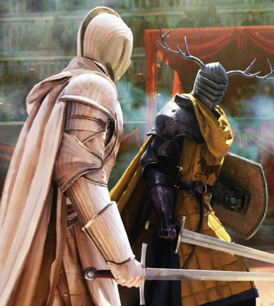

Work Experience
Qualifications
- Squired for many years under Ser Arlyn Pennytree
- Tutored and trained Aegon V
- Won the first Trial of Seven in hundred years
- Traveled Westeros from Dorne all the way to the Wall
- Foiled the Second Blackfyre Rebellion
- Was accepted into the Kingsguard
- Slew Daemon III in the Fourth Blackfyre Rebellion
- Became Lord Commander of the Kingsguard
- Fought and defeated Lyonel Baratheon ending his rebellion
